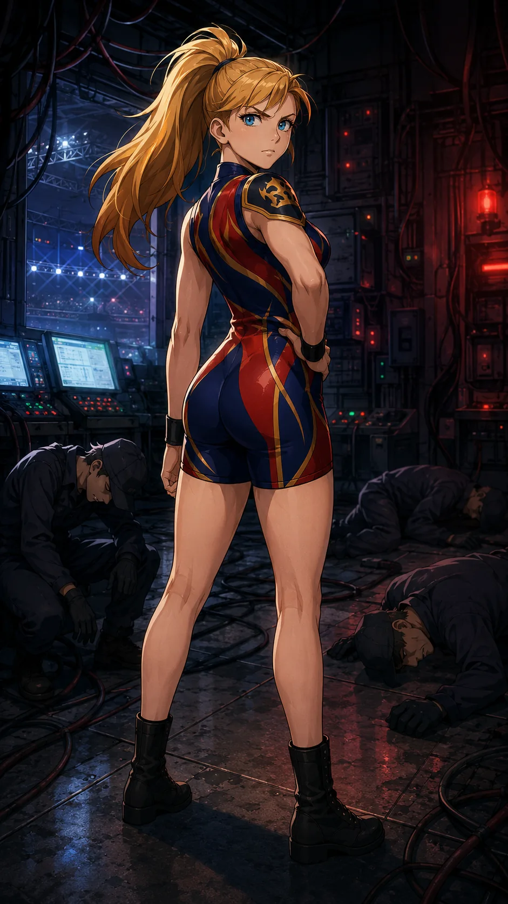

CHARACTER FILE

ヴァルキリーブレイズ
Valkyrie Blaze
『紅蓮の戦乙女／闘う美神』
基本情報
- 年齢
- 18歳
- 体格
- 170cm・引き締まったアスリート型
必殺技
【ブレイズウィング】上段ロープへ片足をかけて沈ませ、反動で体を水平に投げ出す。背中へ集まった炎のオーラが左右へ扇状に広がり、先端が羽根のように細く分かれる。炎の翼を後方へ引きながら、一直線に飛び込む肩が相手を捉える。着地後は転がって衝撃を逃がし、素早く起き上がる。
超必殺技
【ヴァルキリー・ディセント】コーナーポスト最上段で両腕を広げ、背中に大きな炎の翼を展開する。コーナーを蹴って高く跳び、空中で体を反転させ、両腕を引き寄せて急降下する。長髪と炎の翼が上方へ尾を引き、落下の勢いを乗せた蹴りを相手へ叩き込む。
性格
燃えるような闘志と笑顔で観客を魅了する華やかなファイター。飛び技とスピードを武器に、華麗かつ圧倒的な試合運びを見せる。
ファイトスタイル
スピード・空中殺法重視のアクロバティック型。跳躍力と柔軟性を活かした連続飛び技が得意。
相性
- 有利な相手
- 鈍重なパワーファイター・防御型ファイター
- 不利な相手
- スピード型カウンター使い・読み合い型
プロフィール
「美しさは、勇気に火を灯す」──紅蓮の戦乙女、ヴァルキリーブレイズ。少女時代から神話の“ヴァルキリー”に憧れ、木剣と自作の羽飾りで戦乙女ごっこを繰り返していた。やがてその情熱は狂気じみた鍛錬へと昇華し、崖の上からの自由落下や炎の輪を飛び越える訓練など、常軌を逸した修行で空中戦型のスタイルを磨き上げた。 高い跳躍力と柔軟性、そして恐れを知らぬ踏み込みでリングを舞う姿は、まさに天翔ける戦乙女そのもの。必殺技「ブレイズウィング」では炎の翼のような勢いで相手を撃ち抜き、超必殺技「ヴァルキリー・ディセント」では天より舞い降りるかのような一撃で勝負を決める。燃えるような闘志と華やかな笑顔をあわせ持つその姿は、勇気と美しさを宿す紅蓮のヴァルキリーそのものである。
口癖
「私の勇気をみくびらないで！」